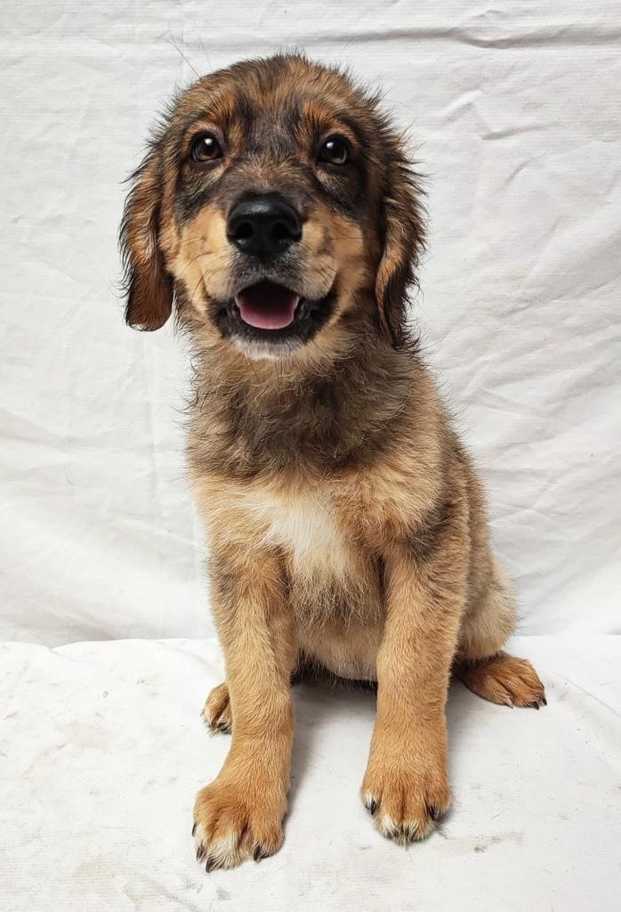

"Morita"
"Adopta a morita una perrita de raza mediana, tranquila y amable y con mucho cariño y amor para dar."

Bienvenidos a este espacio seguro para encontar un fiel compañero.
"Adopta a morita una perrita de raza mediana, tranquila y amable y con mucho cariño y amor para dar."
Adoption sully es una empresa dedicada a brindar servicios de adopcion de mascotas. Su mision es conectar de manera responsable a animales que necesitan un hogar amoroso y con familias y personas que esten dispuestas a brindarles cuidado y afecto. La empresa se esfuerza por garantizar que cada adopción sea un proceso cuidadoso y adecuado, asegurando que tanto los animales como los adoptantes sean compatibles y estén preparados para una vida juntos. Además de facilitar adopciones, Adoption Sully puede ofrecer servicios de asesoramiento y apoyo post-adopción para garantizar el bienestar continuo de las mascotas y sus nuevos dueños. Su compromiso con el bienestar animal y la felicidad de las familias adoptivas es fundamental en todas sus operaciones